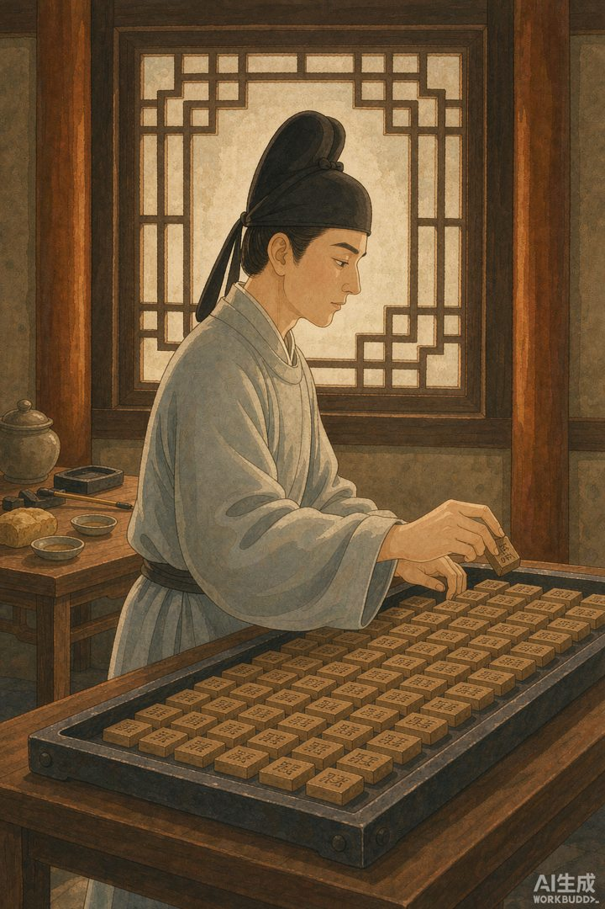
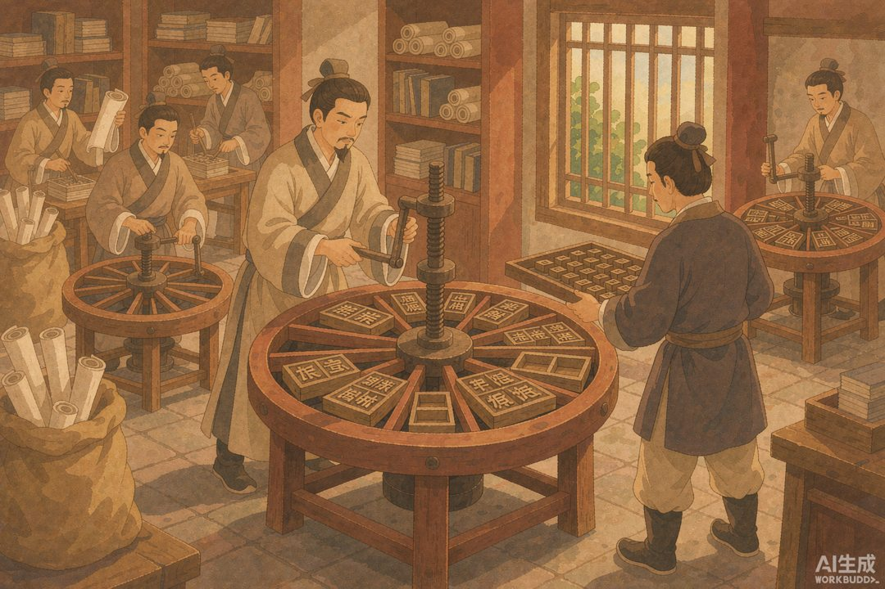
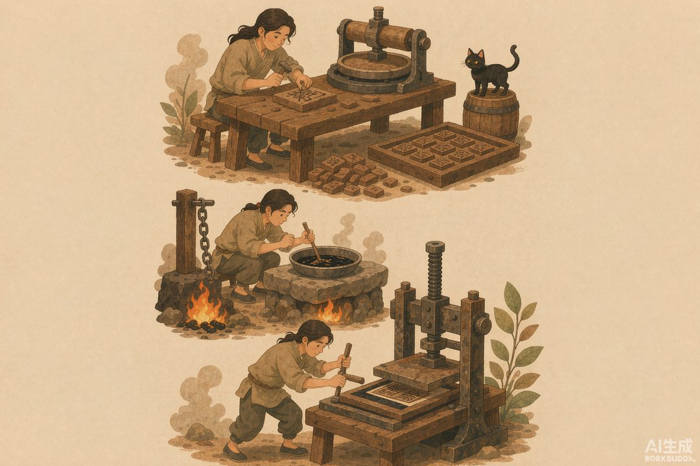

|
信息传播那些事儿 · 卷二「竹简与封泥」· 第 28 篇 |
|
毕昇的憋屈 —— 活字印刷早被发明出来，为什么却没干掉雕版 |

▲ 毕昇在作坊里摆弄胶泥活字，一个被时代耽误的天才（AI 生成示意图）
|
宋朝人连「小报」都能做成地下生意，按说活字印刷该让他们印书印到手软。可偏偏，活字被发明出来四百年，主流还是雕版。这中间的落差，值得今天每一个做技术的人细品。 |
毕昇是个「布衣」——没有功名的平头百姓。宋仁宗庆历年间（公元 1041—1048 年），他鼓捣出一套胶泥活字。这事被他的朋友、大科学家沈括写进了《梦溪笔谈》，原话是：「庆历中有布衣毕昇，又为活版。其法：用胶泥刻字，薄如钱唇，每字为一印，火烧令坚。」
原理放到今天都不过时：把单字刻成小印，烧硬，排进铁框，烧热松脂蜡让字固定，刷墨就能印。沈括还特别点了一句：「若止印三二本，未为简易；若印数十百千本，则极为神速。」——小批量不划算，大批量快得飞起。这跟现代印刷的逻辑一模一样。
一 | 一个被木活字劝退的人 |
毕昇不是没想过用木头。他先试木活字，结果发现「木质纹理疏密不均，沾水则高下不平，兼与药相粘，不可取」——木头吸潮会鼓包，还粘在药上揭不下来。他才改投胶泥，烧硬了均匀、不粘药，总算成。
你看，这就是真实的发明：不是灵光一闪，是一连串试错。毕昇把拣字、贮字（按韵分格）、排版、拆版（再加热取下字印）全想清楚了，工艺完整得像份专利说明书。可他死后，这套东西并没火，沈括也只是感慨一句「其印为予群从所得」，代代相传的，是记载，不是技术。

▲ 刻字→烧硬→排版→刷印，毕昇的活字流程（AI 生成示意图）
二 | 为什么没普及 |
这就怪了：明明更快，为啥四百年里大家还是刻雕版？答案不在技术，在生态。
第一，汉字太多。活字要备几万个常用字模，雕版是一本一板、刻完拉倒。第二，雕版产业链已经成熟，江南书坊师徒代代相传，换活字等于砸自己饭碗，阻力天然大。第三，胶泥字易碎、泥活字难藏，印多了掉粉。第四，也是最关键的——当时没有「大规模重复印同一内容」的刚需。雕版适合印经典，一本卖几十年；活字省的是「印很多本同一种书」，可市场没到那个量。

▲ 元代王祯的转轮排字盘：转着圈拣字，活字才真正好用（AI 生成示意图）
📌 本篇数字锚点 | ||||||||||
|
所以毕昇的憋屈，是「技术超前于生态」的典型。他证明了活字可行，却等不到它爆发——那要等到印刷术传过欧亚、被一个德国金匠配上金属字和压印机，才真正改写世界。而在欧洲那边，活字登场之前，书籍是靠另一群人一棵一棵「种」出来的：修道院里那些沉默的抄写修士。下一篇，我们去中世纪的缮写室看看。
|
🔔 下篇预告 · 第 29 篇《修道院抄本》—— 修士才是欧洲最早的编辑，抄错还要罚抄，手抄时代的质量全靠人力兜底 |
史料转引自沈括《梦溪笔谈》及王祯《农书·造活字印书法》相关研究；配图为 AI 生成示意图。